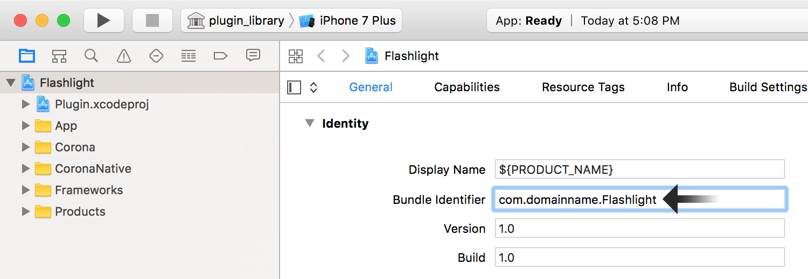
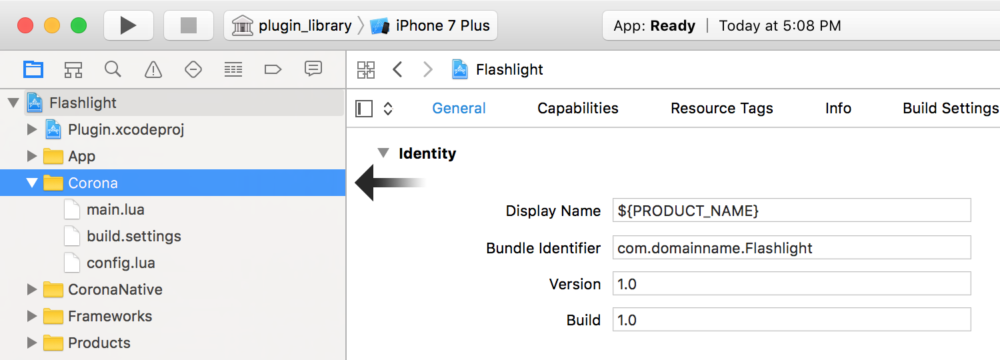
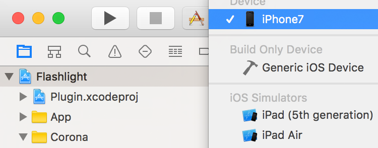

Introduction to Solar2D Native — iOS
This tutorial will help you get started with Solar2D Native builds for iOS.
Before you begin, we recommend that you update to the latest version of Xcode.
Setup
To set up Solar2D Native, follow these steps:
- Install Corona as outlined in Installing Corona — macOS.
Once you have Corona installed, locate its core application folder. Open the Native folder within and run the Setup Corona Native application.
Solar2D Native projects should generally use the provided
Apptemplate as a foundation, so copy theAppfolder( to another convenient location such as a working project folder. Do not modify the original template because you’ll likely need a clean copy for future projects./Native/Project Template/App)Once copied, rename the folder to whatever you want. In this tutorial, we’ll build a sample plugin which activates/deactivates the device’s “flashlight” and then we’ll integrate it into a test app. Thus,
Flashlightis an appropriate folder name.
Plugin Project
Let’s get started! First, we’ll address the plugin side of the project:
Open your
Flashlightfolder — a copy of theApptemplate as described above — and then open theiosfolder.Inside this
iosfolder you’ll see several files, two of which should be noted at this point:App.xcodeprojPlugin.xcodeproj
Basically, these are Xcode Project files which contain various project files and settings.
- Double click the
Plugin.xcodeprojfile to load the project in Xcode. Once loaded, inspect theleft-side Navigator column. From here, expand thePlugin → Source folder tree:

If the Navigator is not visible, reveal it via
- Inside, you’ll see the
PluginLibrary.handPluginLibrary.mmfiles — these are the files which we’ll modify to build the plugin.

For those with a background in C programming, the .mm extension may seem a bit odd. In Xcode, a .m file is really a .c file, but it stands for Methods. This .mm file allows Xcode to mix .h file, this is the traditional C “header” file where you’ll place the definitions for the objects.
Methods File
Now let’s proceed with modifying the methods file (PluginLibrary.mm):
Within Xcode, select
PluginLibrary.mmfrom theleft-side Navigator column to reveal its contents (or alternatively open the file in your preferred text editor).For this tutorial, the plugin will need access to the
AVFoundationframework. As such, we must import the appropriate header file just after theUIKitimport by adding the indicated highlighted line:
#import "PluginLibrary.h" #include <CoronaRuntime.h> #import <UIKit/UIKit.h> #import <AVFoundation/AVFoundation.h>
- Following this, observe that the
PluginLibraryclass is declared. This is the interface for binding your plugin to Lua:
class PluginLibrary
{
public:
typedef PluginLibrary Self;
public:
static const char kName[];
static const char kEvent[];
protected:
PluginLibrary();
public:
bool Initialize( CoronaLuaRef listener );
public:
CoronaLuaRef GetListener() const { return fListener; }
public:
static int Open( lua_State *L );
protected:
static int Finalizer( lua_State *L );
public:
static Self *ToLibrary( lua_State *L );
public:
static int init( lua_State *L );
static int show( lua_State *L );
private:
CoronaLuaRef fListener;
};
Most of this requires no modification except for the final public: block where two methods are defined:
public:
static int init( lua_State *L );
static int show( lua_State *L );
private:
CoronaLuaRef fListener;
};
For our flashlight plugin, show() doesn’t make much semantic sense. Instead, methods of on() and off() are more logical since the plugin will turn the flashlight on or off. Thus, let’s remove the show() method and add both an on() and off() method instead:
public:
static int init( lua_State *L );
static int on( lua_State *L );
static int off( lua_State *L );
private:
CoronaLuaRef fListener;
};
- Now let’s update some values to better represent the actual project on the Lua side and provide proper linking. Essentially, change
"plugin.library"to"plugin.flashlight"and, a few lines after,"pluginlibraryevent"to"Flashlight":
// This corresponds to the name of the library, e.g. [Lua] require "plugin.library" const char PluginLibrary::kName[] = "plugin.flashlight"; // This corresponds to the event name, e.g. [Lua] event.name const char PluginLibrary::kEvent[] = "Flashlight";
- Next, the
PluginLibrary::Open()method needs updating to remove theshow()method and add theon()andoff()methods we specified earlier:
int
PluginLibrary::Open( lua_State *L )
{
// Register __gc callback
const char kMetatableName[] = __FILE__; // Globally unique string to prevent collision
CoronaLuaInitializeGCMetatable( L, kMetatableName, Finalizer );
// Functions in library
const luaL_Reg kVTable[] =
{
{ "init", init },
{ "on", on },
{ "off", off },
{ NULL, NULL }
};
// Set library as upvalue for each library function
Self *library = new Self;
CoronaLuaPushUserdata( L, library, kMetatableName );
luaL_openlib( L, kName, kVTable, 1 ); // leave "library" on top of stack
return 1;
}
- Now, scroll down until you see the
show()method. Since we don’t need this method for our flashlight plugin, remove it and replace it with two new methods foron()andoff():
// [Lua] library.on( word )
int
PluginLibrary::on( lua_State *L )
{
NSString *message = @"Device does not appear to have a camera light.";
// check if flashlight available
Class captureDeviceClass = NSClassFromString(@"AVCaptureDevice");
if (captureDeviceClass != nil) {
AVCaptureDevice *device = [AVCaptureDevice defaultDeviceWithMediaType:AVMediaTypeVideo];
if ([device hasTorch] && [device hasFlash]){
message = @"Device light should be on.";
[device lockForConfiguration:nil];
if (device.torchMode == AVCaptureTorchModeOff) {
[device setTorchMode:AVCaptureTorchModeOn];
[device setFlashMode:AVCaptureFlashModeOn];
}
[device unlockForConfiguration];
}
}
Self *library = ToLibrary( L );
// Create event and add message to it
CoronaLuaNewEvent( L, kEvent );
lua_pushstring( L, [message UTF8String] );
lua_setfield( L, -2, "message" );
// Dispatch event to library listener
CoronaLuaDispatchEvent( L, library->GetListener(), 0 );
return 0;
}
// [Lua] library.off( word )
int
PluginLibrary::off( lua_State *L )
{
NSString *message = @"Device does not appear to have a camera light."; ;
// check if flashlight available
Class captureDeviceClass = NSClassFromString(@"AVCaptureDevice");
if (captureDeviceClass != nil) {
AVCaptureDevice *device = [AVCaptureDevice defaultDeviceWithMediaType:AVMediaTypeVideo];
if ([device hasTorch] && [device hasFlash]){
message = @"Device light should be off.";
[device lockForConfiguration:nil];
if (device.torchMode == AVCaptureTorchModeOn) {
[device setTorchMode:AVCaptureTorchModeOff];
[device setFlashMode:AVCaptureFlashModeOff];
}
[device unlockForConfiguration];
}
}
Self *library = ToLibrary( L );
// Create event and add message to it
CoronaLuaNewEvent( L, kEvent );
lua_pushstring( L, [message UTF8String] );
lua_setfield( L, -2, "message" );
// Dispatch event to library listener
CoronaLuaDispatchEvent( L, library->GetListener(), 0 );
return 0;
}
Within each new method, following the
Self *library = ToLibrary( L );
// Create event and add message to it
CoronaLuaNewEvent( L, kEvent );
lua_pushstring( L, [message UTF8String] );
lua_setfield( L, -2, "message" );
// Dispatch event to library listener
CoronaLuaDispatchEvent( L, library->GetListener(), 0 );
return 0;
}
Basically, this code creates a C object called library which is the pathway to the Lua app. Next, it calls CoronaLuaNewEvent() and passes it the kEvent object. It then adds the string message and tells Lua that it’s the second entry in the table. Finally, it dispatches the event to the library (further on in this tutorial we’ll discuss the Lua code for handling this event).
- The last block of code in the
PluginLibrary.mmfile is this:
CORONA_EXPORT int luaopen_plugin_library( lua_State *L )
{
return PluginLibrary::Open( L );
}
Because of the “suffix” of _library, the name of the plugin on the Corona side will be library. That name is vague if you decide to build several plugins, so let’s rename the plugin flashlight by changing the code to luaopen_plugin_flashlight:
CORONA_EXPORT int luaopen_plugin_flashlight( lua_State *L )
{
return PluginLibrary::Open( L );
}
- At this point, save your
PluginLibrary.mmfile and proceed to the next section.
Header File
Now let’s proceed with modifying the header file (PluginLibrary.h):
Within Xcode, select
PluginLibrary.hfrom theleft-side Navigator column to reveal its contents (or alternatively open the file in your preferred text editor).Change the
CORONA_EXPORTline to the following:
// This corresponds to the name of the library, e.g. [Lua] require "plugin.library" // where the '.' is replaced with '_' CORONA_EXPORT int luaopen_plugin_flashlight( lua_State *L ); #endif // _PluginLibrary_H__
- At this point, save your
PluginLibrary.hfile and proceed to the next section.
Building the Project
Xcode projects need to be built to verify the code and test for any errors. Confirm that you saved all changes to both PluginLibrary.mm and PluginLibrary.h, then select
App Project
Now, from within your core Flashlight folder, open the App.xcodeproj project and proceed with the following steps:
- First, rename the project to something more sensible by clicking and hovering over the project name (
App) in theleft-side Navigator column. Change the name fromApptoFlashlight. Upon entry, Xcode will analyze the project and show a dialog box indicating all of the names it will change. Click Rename to confirm.

- In the middle pane, with General selected along the upper tab bar, look for the Identity section. For Bundle Identifier, change the value to a valid app bundle ID which you set up in the Apple Developer portal. If you need assistance on Apple provisioning, please see our guide.

- Next, scroll down to the
Linked Frameworks and Libraries section and look forAVFoundation.framework. If you do not see it, click the [+] button below the list, selectAVFoundation.framework, and click Add.
Lua Project Code
The final step is to implement our plugin into a standard Corona (Lua) project. Within Xcode, from the

Here you’ll see typical Corona project files like main.lua, build.settings, and config.lua. For Solar2D Native, the latter two files are typically not used, so we can ignore them for this tutorial.
Select main.lua to reveal its contents (or alternatively open the file in your preferred text editor) and then replace the existing file code with the following:
local flashlight = require( "plugin.flashlight" )
local widget = require( "widget" )
-- This event is dispatched to the global Runtime object by "didLoadMain:" in MyCoronaDelegate.mm
local function delegateListener( event )
native.showAlert(
"Event dispatched from 'didLoadMain:'",
"of type: " .. tostring( event.name ),
{ "OK" } )
end
Runtime:addEventListener( "delegate", delegateListener )
local function listener( event )
print( "Received event from Flashlight plugin (" .. event.name .. "): ", event.message )
end
local lightState = "off"
local function handleButtonEvent( event )
if ( lightState == "off" ) then
flashlight.on()
lightState = "on"
event.target:setLabel( "Turn Off" )
else
flashlight.off()
lightState = "off"
event.target:setLabel( "Turn On" )
end
return true
end
local onOffSwitch = widget.newButton(
{
x = display.contentCenterX,
y = display.contentCenterY,
label = "Turn On",
onRelease = handleButtonEvent
})
flashlight.init( listener )
Let’s inspect this code step by step:
The first line loads our plugin into a Corona variable called
flashlight, similar to how you’d include any typical Corona plugin. The second line includes the Corona widget library which we’ll use to create a standard button.Next is the function called
delegateListener(). This function will be attached to the Runtime event"delegate"and it will receive events dispatched from the native side. Basically, this lets you know when the app has been loaded, but this sample won’t use it in any meaningful way (in this case, it just shows an alert).The next function is the listener that the app uses to receive events from various plugin methods. Like the previous function, this won’t be used in any meaningful way within this sample.
The rest of the code does the main work from the Corona side. Among other things, we create a widget button that uses the listener function named
handleButtonEvent(). Most importantly, notice that thehandleButtonEvent()function callsflashlight.on()andflashlight.off(), the functions that we wrote inObj-C withinPluginLibrary.mm.
local function handleButtonEvent( event )
if ( lightState == "off" ) then
flashlight.on()
lightState = "on"
event.target:setLabel( "Turn Off" )
else
flashlight.off()
lightState = "off"
event.target:setLabel( "Turn On" )
end
return true
end
Test Run
And now for the fun — testing on an actual device!
Assuming you’ve enabled your iOS device as a development device, connect it to your computer with the sync cable.
In the Xcode tool bar, click on the active scheme button and confirm that App is the selected scheme:

- In the same scheme button region, click to the right of the thin arrow (⟩). You should find a list of connected device(s) under the grey Device subheader. Select the device that you wish to test on.

To the left of the scheme button, you’ll see a Run button. Click this and Xcode will install the app onto the device and start it. Because it’s in development mode, it may take a couple seconds longer to start up.
If everything is working correctly, you’ll see a “Turn On” button in the center of the screen. Tap it and the device’s flashlight should turn on. Tap the button again to turn off the flashlight.
When you’re finished testing, click the Stop button in Xcode.
Conclusion
Clearly this tutorial is just a basic example of what can be done with Solar2D Native, but hopefully it has shown you what can be accomplished when you combine the nearly unlimited power of native programming with the ease and simplicity of Corona!